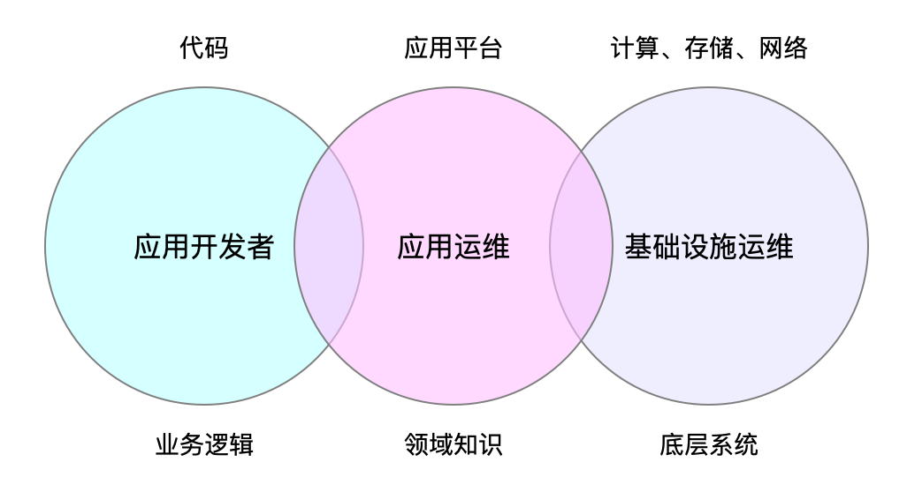

角色与分工
云原生应用在诞生之初就是面向云而设计，适应云环境，为了在云上运行而开发的应用，既然是应用就涉及到生命周期管理，在一个云原生应用的生命周期中，存在以下几种角色，如下图所示。

三者之间不是完全独立，而是互有交集。
- 应用开发者：关注的是代码，对应用的生命周期负责，需要了解业务逻辑。
- 应用运维：维护应用平台，负责管理应用的生命周期管，需要具有应用的领域知识。
- 基础设施运维：维护计算、存储和网络资源，需要具有底层系统的知识。
下面将分别阐述这三种角色之间的区别和联系。
应用开发者
应用开发者负责编写代码，实现应用程序的业务逻辑和数据的处理，是应用程序的拥有者、负责人。底层的计算、存储、网络的复杂性全部通过编程语言层面给屏蔽掉了，比如开发者需要发起远程过程调用（RPC），只需要指定对应的协议，调用相应的接口，传递符合规范的数据即可，而不需要自己去实现一个协议。
注意这里之所以在开发者前面加上了”应用“两个字，是为了强调这部分开发者是面向业务的开发者，而非基础设施、中间件或者平台开发者，虽然他们本质上都是开发者，但是面向的对象不同。应用开发者负责生产应用程序，并负责它的升级换代，但是对于应用生产出来后如何维护，就要交给应用运维了。
应用运维
应用运维人员通常基于 PaaS 平台为应用程序提供运行时所需的资源或能力，负责管理应用程序的生命周期，更加关注应用交付，如应用的构建、打包、编排、调度、发布、升级、回滚、配置、备份等，这些操作通常与开发者要运行的应用程序的本身逻辑无关。当需要为某些类型的应用提供平台层能力的时候，应用运维还需要具有这些应用所处领域的专业知识。比如数据科学家需要使用的大数据集群，这些集群通常会有专人来维护，这些人可能不会直接参与底层基础设施的建设，而是负责在 PaaS 平台上维护这套集群。但是对于一些简单的 web 应用，应用运维的角色有时候也会由开发者兼任，也就是 DevOps。
基础设施运维
基础设施运维可能是管理公有云中的资源（虚拟机或容器），也可能直接管理底层的物理资源，他们不必了解这些资源上具体运行的是什么应用，也不需要相关领域的背景知识，在他们眼里一切皆为资源（计算、存储、网络），他们需要负责基础设施的稳定性，资源的利用率，账号的权限管理等。
关系
这三个角色不是孤立存在的，他们之间存在很多交集，其中应用运维是将开发者与程序运行资源、环境串联起来的关键，这个角色部分职能可以由 PaaS 平台来完成。